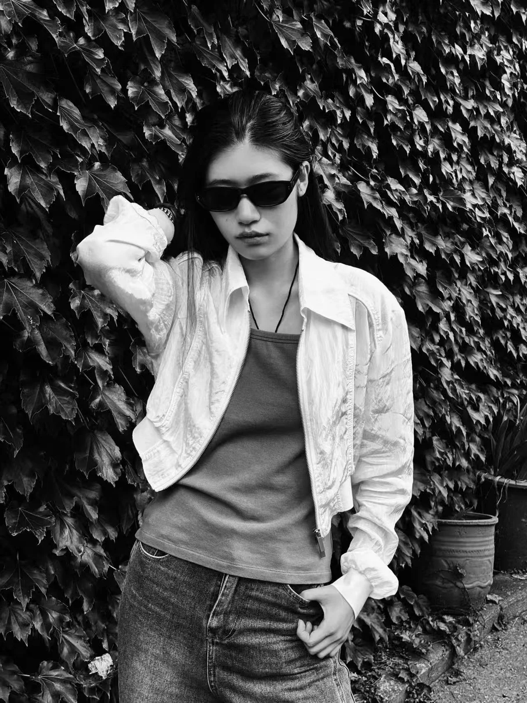
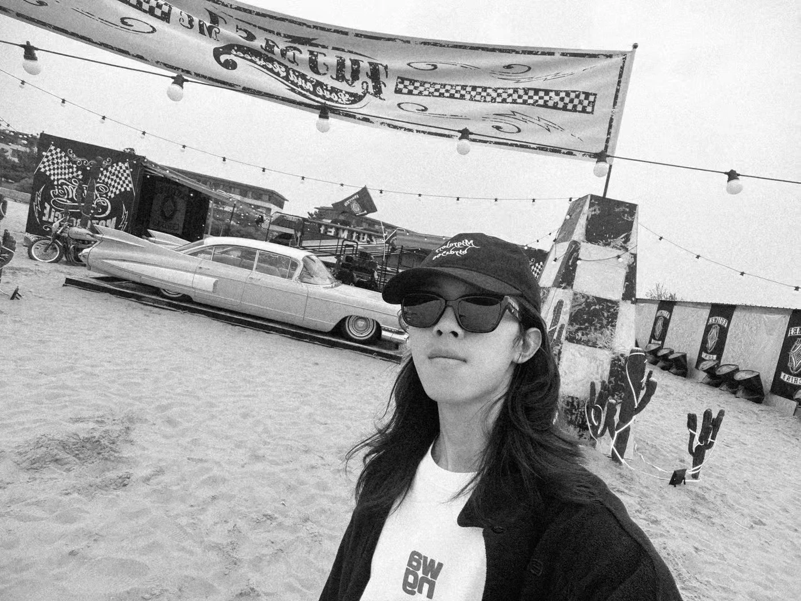
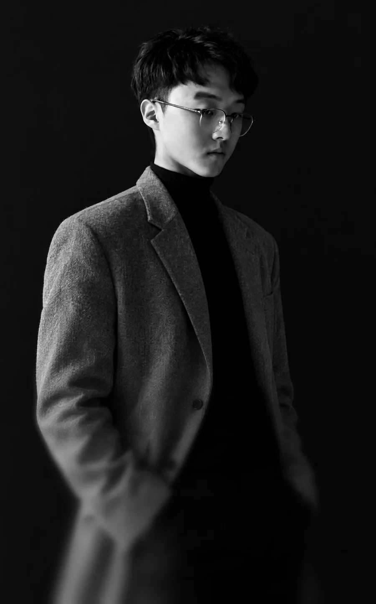

让想象，
显影。
无衣 / WUYI STUDIO
以人的感受为起点，
探索 AI 影像的更多可能。
EXPERIMENT NO. 001FORM / LIGHT / MOTION
无形，成像。
AI FILM & VISUAL EXPLORATION向下，走进我们的视野 ↓
01 / VISUAL EXPLORATIONS关于形态、光与想象的习作
画面之外，
还有可能。
从一束光、一种材质、一段运动开始。
让直觉成为画面，让画面生长出叙事。
以上为本站的程序化视觉习作，非客户项目。
02 / THE STUDIO不同的视角，同一个方向。
OUR NAME, OUR SPIRIT.岂曰无衣，
岂曰无衣，
与子同袍。
无衣，是一群创作者的共同署名。
我们以 AI 为创作媒介，关注画面中的情绪、节奏，以及故事抵达人的方式。工具不断变化，而审美、判断与表达，始终来自人。
“同袍”是我们对协作的理解：带着各自的视角，共同完成一个人的想象无法抵达的画面。
01
从想法开始
概念 · 故事 · 视觉方向
02
让画面发生
影像生成 · 风格探索 · 动态表达
03
把感受留下
节奏 · 剪辑 · 视听整合
03 / THE PEOPLE创作的背后，是具体的人。
各有视角，
一起成像。
保持独立的感受。
也相信共同创作的力量。

01
02
0304 / START A CONVERSATION一个想法，可以是开始。
下一帧，
一起想象。
关于一段影像，或一个还没成形的念头。
先写下你的项目想法